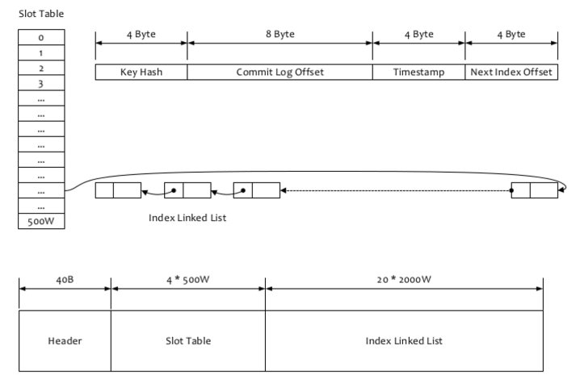

rocketmq

Name Servers: service discovery and routing. Each Name Server records full routing information.Brokers: message storage by providing lightweightTOPICandQUEUEmechanisms.Producers: send messages to the Broker cluster through multiple load balancing modes.Consumers: distributed cluster consumption and message broadcasting.
1. NameServer
Two features:
Broker Management: accepts the register from Broker cluster and provides heartbeat mechanism to check whether a broker is alive.Routing Management: each NameServer will hold whole routing info about the broker cluster and the queue info for clients query.
2. Broker Server
Broker server is responsible for message store and delivery, message query, HA guarantee, and so on.
As shown in image below, Broker server has several important sub modules:

Remoting Module: the entry of broker, handles the requests from clients.Client Manager: manages the clients (Producer/Consumer) and maintains topic subscription of consumer.Store Service: provides simple APIs to store or query message in physical disk.HA Service: provides data sync feature between master broker and slave broker.Index Service: builds index for messages by specified key and provides quick message query.
2.1 Broker Role
- ASYNC_MASTER
- SYNC_MASTER
- SLAVE
Deploy strategy:
NOT allow missing: SYNC_MASTER with SLAVE.Allow missing but always available: ASYNC_MASTER with SLAVE.Otherwise: ASYNC_MASTER without SLAVE.
3. Storage

3.1 CommitLog
- default 1G a file, the length of file name is 20, the format is
<0 prefix> + <offset>. - the first file name is
00000000000000000000, offset is 0，file size is 1G=1073741824, the second file name is00000000001073741824，offset is1073741824. - One broker one commit log.
3.2 ConsumeQueue
- logical consume queue, save at
$HOME/store/consumequeue/{topic}/{queueId}/{fileName} - every message in consume queue is fixed format,
<8 bytes commit log offset> + <4 bytes message length> + <8 bytes tag hash code> - total 30w messages for one file, so the file size is fixed 5.72M.
3.3 Index File
- hash format index file
- store at
$HOME \store\index${fileName} - used to query message by key or time range.

- Header: fixed 40 bytes, includes create timestamp.
- File Name: timestamp of create time
- File Size:
40+500W*4+2000W*20 = 420000040 bytes (400MB) - Slot Table: hash slot, the value is the sequence number of the first index of the linked list.
- Index Struct:
- Key Hash: the hash of the key
- Commit log offset
- Timestamp: seconds since the create timestamp in header
- Next Index Offset: the sequence number of next index
key_hash = hash(<topic> + "#" + key)
slot_num = key_hash % 500w
slot_offset = 40 + 4 * slot_num
index_sequence = Int4BytesAt(slot_offset)
index_offset = 40 + 4 * 500w + 20 * index_sequence
index_key_hash = Int4BytesAt(index_offset)
index_commit_offset = Long8BytesAt(index_offset + 4)
index_timestamp = Int4BytesAt(index_offset + 4 + 8) * 1000 + header_timestamp
index_next_sequence = Int4BytesAt(index_offset + 4 + 8 + 4)
3.4 write/read data
Uses PageCache to flush data to disk to enhence write performance.

Uses MappedByteBuffer(mmap) to enhence read performance.
4. Message
4.1 Topic
Topic, internally, is logically partitioned into one or more sub-topics. We call these sub-topics message queues.
This concept plays a major role in implementing valuable features, including fail-over, maximum concurrency, etc.
4.2 Tag
Consume tag filter is processed on broker side, only filter by tag hash code. So consumer SHOULD check whether the tag is matched for received messages.
4.3 Message Format
Fields in a message:
| Field | Bytes Size | Desc |
|---|---|---|
| msgSize | 4 | message size |
| MAGICCODE | 4 | fixed daa320a7 |
| BODY CRC | 4 | check when broker restarting to recover |
| queueId | 4 | queue id |
| flag | 4 | flag |
| QUEUEOFFSET | 8 | sequence in consumeQueue or tranStateTable; For none-transaction message or commit message，QUEUEOFFSET * 20 is the offset in consume queue; For Prepared or Rollback Message，used to find data in tranStateTable. |
| PHYSICALOFFSET | 8 | offset in commit log |
| SYSFLAG | 4 | 4 bytes from lower to high;1st byte=1 means compressed; 2nd byte = 1 means MultiTags; 3rd byte = 1 means prepared message; 4th byte = 1 means commit message; 3rd&4th bytes = 1 means rollback message; 3rd&4th bytes = 0 means none-transaction message; |
| BORNTIMESTAMP | 8 | producer timestamp |
| BORNHOST | 8 | producer address:port |
| STORETIMESTAMP | 8 | store timestamp at broker |
| STOREHOSTADDRESS | 8 | broker address:port |
| RECONSUMETIMES | 8 | re-consumed times for a consume group (count separatedly), for retry-messages being send to topic %retry%groupName(queueId=0) |
| PreparedTransaction Offset | 8 | transaction prepared message offset |
| messagebodyLength | 4 | length of body |
| messagebody | bodyLength | body |
| topicLength | 1 | topic length |
| topic | topicLength | topic |
| propertiesLength | 2 | properties length |
| properties | propertiesLength | properties |
4.4 Message Id
16 bytes: <broker ip> + <broker port> + offset
4.5 transaction message
Transaction message is based on 2PC and compensation check.

Two inner topics:
half msg topic: save half messageop topic: commit/rollback message, the value is the offset of the half message. If it's commit op, generate a normal message to use topic.
-------------- offset -----------
| half topic | <---------- | op topic |
------------- -----------
|
-------------- commit |
| user topic | <---------------
-------------
If not receive op message, try to check the state of local transaction. Retry maximum 15 times, otherwise rollback message.

4.6 delay message
RocketMQ an inner topic SCHEDULE_TOPIC_XXXX and 18 queues for different delay time level.
1st level queue delays 1s, 18th level queue delays 2h.
messageDelayLevel=1s 5s 10s 30s 1m 2m 3m 4m 5m 6m 7m 8m 9m 10m 20m 30m 1h 2h
Set delay time level:
Message msg = new Message();
msg.setTopic("TopicA");
msg.setTags("Tag");
msg.setBody("this is a delay message".getBytes());
// set delay level to 5, means delay 1m
msg.setDelayTimeLevel(5);
producer.send(msg);
Delay message process:
- change the Topic&Queue to
SCHEDULE_TOPIC_XXXXand delay time level queue, original Topic&Queue will be saved in message properties. calculate thedelivery time, which equalsstoreTimestamp + delay_level_time, as thetag hash code. - send message to delay ConsumeQueue.
ScheduleMessageServiceconsume topicSCHEDULE_TOPIC_XXXX. It will check the delivery time of the first message, and continue process next message if matches.ScheduleMessageServicechange Topic&Queue of the message to the original, then save message to CommitLog again.- send message to original Topic&Queue.
- consumers consume from original Topic.
4.7 reconsume message
RocketMQ allows reconsuming a message if consuming failed and returning status ConsumeConcurrentlyStatus.RECONSUME_LATER,
then the message will be send to delay message topic as a delay message.
The delay time level is default 3 (means delay 10s), and will be increased 1 if requesting to reconsume again. The message will be discarded if the delay time level exceeds the max. So the max consume retry time is 16.
consumer.registerMessageListener(new MessageListenerConcurrently() {
@Override
public ConsumeConcurrentlyStatus consumeMessage(List<MessageExt> msgs,
ConsumeConcurrentlyContext context) {
// handle message failed
// return RECONSUME_LATER to reconsume later
return ConsumeConcurrentlyStatus.RECONSUME_LATER;
}
});
5. communication
communication between clients, brokers, nameservers.
5.1 communication message

Format:
<message length>(4 bytes) + <Serialization type>(1 byte) + <Header length>(3 bytes) + <Data Header> + <Message Body>
| Header Field | Type | Request Desc | Response Desc |
|---|---|---|---|
| code | int | Request Operation Code | Response code, 0:success, none-zero: fail |
| language | LanguageCode | request language | response language |
| version | int | request version | response version |
| opaque | int | like requestId，different for requests on same connection | response the original value |
| flag | int | normal rpc or oneway | normal rpc or oneway |
| remark | String | custom info | custom info |
| extFields | HashMap<String, String> | custom info | custom info |
5.2 communication method
- sync
- async
- oneway: send and not care response, eg heartbeat.
5.3 balance
Balance is done on client side both for provider and consumer.
provider send balance: chose a message queue, support fault tolerance.consumer balance: In fact, push is based on pull, and pull again immediately after pulling a batch of messages.
6. Cluster
| Cluster Model | Performance | Available | Message lose |
|---|---|---|---|
| Mutiple Masters | High Performance | Not available when going down | No message lose |
| Multple Masters, Multiple Slaves Async Replication |
High Performance (small replication latency for slaves) | Available when master going down | may lose some message when master going down |
| Multple Masters, Multiple Slaves Sync Replication |
RT is higher, thoughput 10% lower than others | Available when master going down | No message lose |
6.1 broker configuration
# cluster name
brokerClusterName=rocketmq-cluster
# must different for different broker， slaves have the same name.
brokerName=broker-a
# 0:Master，>0:Slave
brokerId=0
# Broker IP
brokerIP1=192.168.31.186
# Broker listen port
listenPort=10911
# time to delete file, default 04:00
deleteWhen=04
# reserved time for files, default 48 hours
fileReservedTime=120
# Broker role，ASYNC_MASTER，SYNC_MASTER，SLAVE
brokerRole=ASYNC_MASTER
# flush disk type，ASYNC_FLUSH，SYNC_FLUSH
flushDiskType=SYNC_FLUSH
# nameServer addresses，format is ip1:port1;ip2:port2;ip3:port3
namesrvAddr=192.168.31.186:9876;192.168.31.231:9876
# queue numbers for topic, default 4. For load balance.
defaultTopicQueueNums=8
# whether create Topic automatically
autoCreateTopicEnable=false
# whether create subscription group automatically
autoCreateSubscriptionGroup=false
# store root path
storePathRootDir=/data/rocketmq-all-4.9.1-bin-release/data/store-a
# commitLog
storePathCommitLog=/data/rocketmq-all-4.9.1-bin-release/data/store-a/commitlog
# store path for consumer queue
storePathConsumerQueue=/data/rocketmq-all-4.9.1-bin-release/data/store-a/consumequeue
# store path for index
storePathIndex=/data/rocketmq-all-4.9.1-bin-release/data/store-a/index
# store path for checkpoints
storeCheckpoint=/data/rocketmq-all-4.9.1-bin-release/data/store-a/checkpoint
# store path for abort file
abortFile=/data/rocketmq-all-4.9.1-bin-release/data/store-a/abort
# size of one commitLog file, default 1G.
mapedFileSizeCommitLog=1073741824
# number of messages in one ConsumeQueue file, default 30W
mapedFileSizeConsumeQueue=300000
6.2 replication
_________ __________
| | <---- report slave offset ----- | |
| master | | slave |
| | ---- send batch messages ----> | |
---------- ---------
- slave report commit log offset to master;
- master batch send messages to slave;
- slave write messages to commit log;
- slave report new offset to master;
- master messages is success if its offset is less than the slave report offset
NOTE: master-slave cluster is not guarantee strong consistence between master and slaves.
// CommitLog.java
// public CompletableFuture<PutMessageResult> asyncPutMessage(final MessageExtBrokerInner msg) {
// public CompletableFuture<PutMessageResult> asyncPutMessages(final MessageExtBatch messageExtBatch) {
// 1. async flush to db
CompletableFuture<PutMessageStatus> flushResultFuture = submitFlushRequest(result, msg);
// 2. async replicate to slave
CompletableFuture<PutMessageStatus> replicaResultFuture = submitReplicaRequest(result, msg);
return flushResultFuture.thenCombine(replicaResultFuture, (flushStatus, replicaStatus) -> {
if (flushStatus != PutMessageStatus.PUT_OK) {
putMessageResult.setPutMessageStatus(flushStatus);
}
if (replicaStatus != PutMessageStatus.PUT_OK) {
putMessageResult.setPutMessageStatus(replicaStatus);
if (replicaStatus == PutMessageStatus.FLUSH_SLAVE_TIMEOUT) {
log.error("do sync transfer other node, wait return, but failed, topic: {} tags: {} client address: {}",
msg.getTopic(), msg.getTags(), msg.getBornHostNameString());
}
}
return putMessageResult;
});
6.3 Dledger cluster
dledger is a raft-based java library for building high-available, high-durable, strong-consistent commitlog, which could act as the persistent layer for distributed storage system, i.e. messaging, streaming, kv, db, etc.
rocketmq support to change storage to dledger, to provide consistence between master and slaves.
A. Reference
- rocketmq features, https://github.com/apache/rocketmq/blob/master/docs/cn/features.md
- rocketmq concept, https://github.com/apache/rocketmq/blob/master/docs/cn/concept.md
- rocketmq architecture, https://github.com/apache/rocketmq/blob/master/docs/cn/architecture.md
- rocketmq design, https://github.com/apache/rocketmq/blob/master/docs/cn/design.md
- rocketmq operation, https://github.com/apache/rocketmq/blob/master/docs/cn/operation.md
- RocketMQ消息的主从复制机制, https://www.jianshu.com/p/73aea81c180d
- raft-base commitlog store, https://github.com/openmessaging/dledger
History
- 2021-12-22, add chapter
delay message,reconsume message - 2021-09-25, add chapter
cluster - 2021-09-13, first version